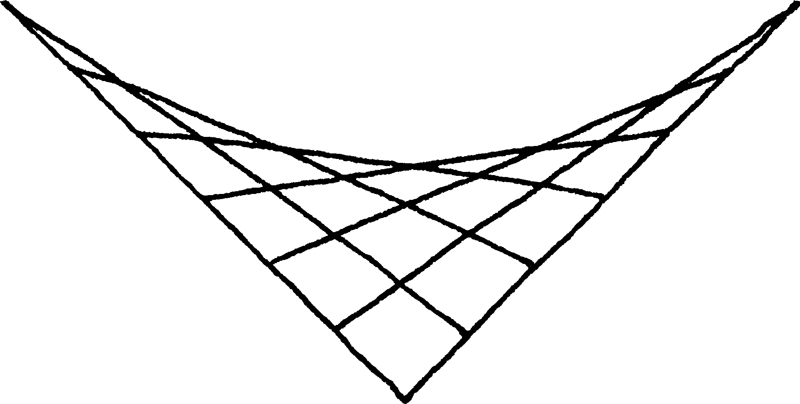
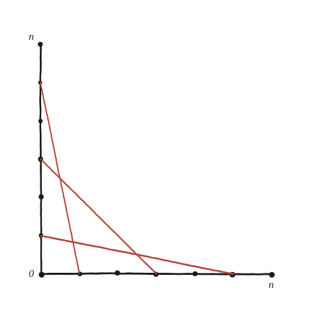
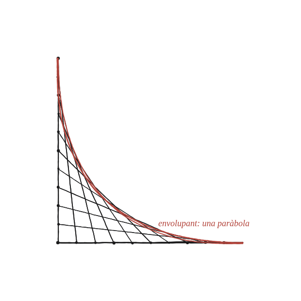

Si connectes línies seguint aquest patró equidistant, apareix una paràbola. Per què?

Què hem de produir
Una explicació de per què la "corba" que sembla aparèixer entre les rectes —que en realitat no n'hi ha cap de dibuixada— és exactament una paràbola, i no una altra corba qualsevol.
Cap recta és corba; és l'ull qui hi veu una corba
Cada recta és tangent a una certa corba (la seva envolupant): la corba que "toca" cada recta del feix sense travessar-ne cap. Amb n+1 punts a cada eix, numerats 0..n, la recta i uneix el punt i d'un eix amb el punt n−i de l'altre. Quina relació hi ha entre els dos números que etiqueten els extrems d'una mateixa recta?

La construcció

Tancar-ho
La recta que uneix (i,0) amb (0,n−i) té equació x/i + y/(n−i) = 1. Cada recta d'aquestes és tangent a la corba √x + √y = √n —una paràbola, girada 45° respecte de la posició habitual.
Per què hi és tangent, i no només a prop
No cal creure-s'ho: es demostra amb l'eina de la Qüestió 120, la de «tangent = la recta que hi toca amb arrel doble». Primer, la corba sense arrels: de √x + √y = √n, elevant al quadrat dues vegades, surt (x−y)² = 2n(x+y) − n². Substituint-hi la recta y = b − (b/a)x, amb a=i, b=n−i i a+b=n, els comptes es simplifiquen sols i queda (n²/a²)·x² − 2n·x + a² = 0, és a dir (x − a²/n)² = 0.
Arrel doble: el punt de contacte
La recta no talla la corba en dos punts; la toca en un de sol, a x = a²/n, i per simetria y = b²/n. Que aquell punt sigui realment sobre la corba es comprova en una línia: √(a²/n) + √(b²/n) = (a+b)/√n = n/√n = √n. Cada recta del feix té, doncs, el seu punt de contacte, i tots ells junts són la paràbola que l'ull hi veu.
El feix de rectes que uneixen (i,0) amb (0,n−i), per a i=0..n, té com a envolupant la corba √x + √y = √n —una paràbola girada 45°. Cap recta la dibuixa; és tangent a totes elles alhora.
Comprovació
n=10, recta i=4 (x/4 + y/6 = 1): el punt de contacte que prediu la fórmula és (16/10, 36/10) = (1,6; 3,6). És a la recta? 1,6/4 + 3,6/6 = 0,4 + 0,6 = 1. És a la corba? √1,6 + √3,6 = 1,2649 + 1,8974 = 3,1623 = √10. Amb i=5 surt (2,5; 2,5) i amb i=3, (0,9; 4,9): totes tres cauen sobre la mateixa corba.
Cosa diferent és on es tallen dues rectes veïnes: les i=4 i i=5 es tallen a (2,3), i allà √2+√3≈3,146, que no és √10≈3,162 sinó una mica menys. Aquesta diferència és l'error de fer servir rectes veïnes en lloc de rectes infinitament properes, i s'encongeix com més rectes es dibuixin. Els punts de contacte, en canvi, hi són exactes des del primer moment.
Aquesta manera de generar una corba com a envolupant d'una família de rectes —sense dibuixar mai la corba directament— és la mateixa idea ja feta servir amb un bastó de longitud constant lliscant entre dos eixos perpendiculars: allà l'envolupant sortia d'un segment lliscant, aquí, d'una família de segments amb un patró numèric.